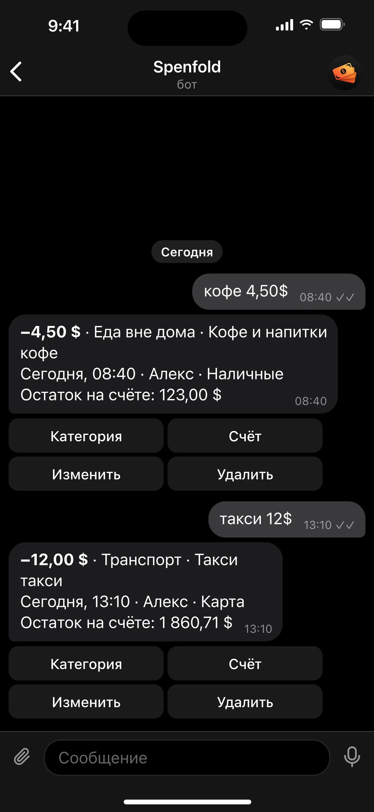

Бесплатная модель читает трату и ставит категорию, а считает всё код.
- Мешало
- В приложениях учёта трату заносят формой: сумма, валюта, счёт, категория. На ходу это долго. Бесплатные модели при этом плохо считают и путают даты.
- Решил
- Трату пишут боту текстом, голосом или фото чека: «кофе 4,50$». Модель только достаёт из сообщения сумму, валюту и категорию. Курсы, пересчёт и итоги считает код, он же отвечает на вопросы боту. Бот сразу присылает готовую запись, под ней кнопки правки.
- Отверг
- Отдать модели даты и подсчёт. Маленькая модель записала «в понедельник» двенадцатым числом, а понедельник был четырнадцатым.
